Sushi*
Nigiri (hand-pressed)
- Tamago (egg)
- Inari (tofu filled with rice)
- Tobiko (flying fish roe)
- Maguro (tuna)
- Sake (salmon)
- Ebi (cooked shrimp)
- Tako (cooked octopus)
- Unagi (freshwater eel)
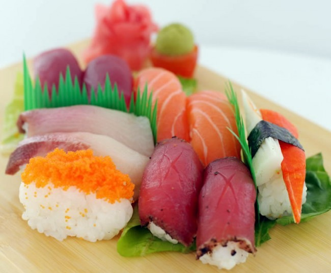
Nigiri Sushi
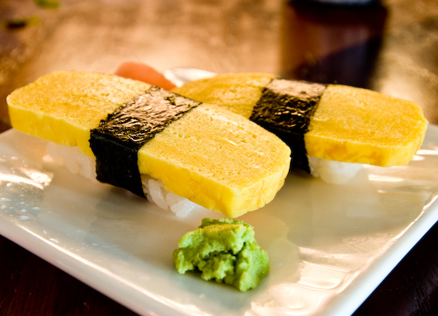
Tamago
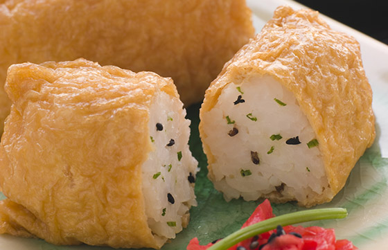
Inari
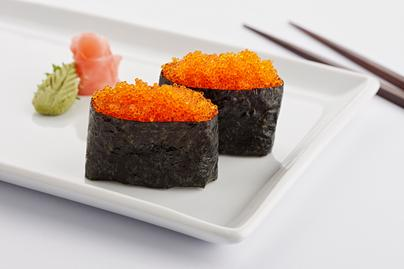
Tobiko
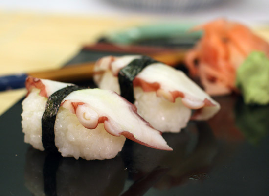
Tako
Hosomaki (circular rolls)
- Tekkamaki (tuna)
- Kappamaki (cucumber)
- Negitoromaki (fatty tuna and scallions)
- Kanpyomaki (dried calabash gourd)
- Takuan Hosomaki (pickled daikon radish)
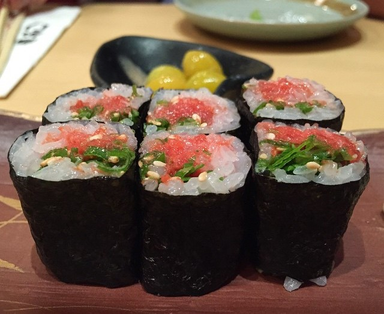
Negitoromaki
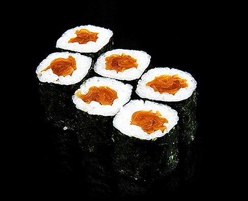
Kanpyomaki
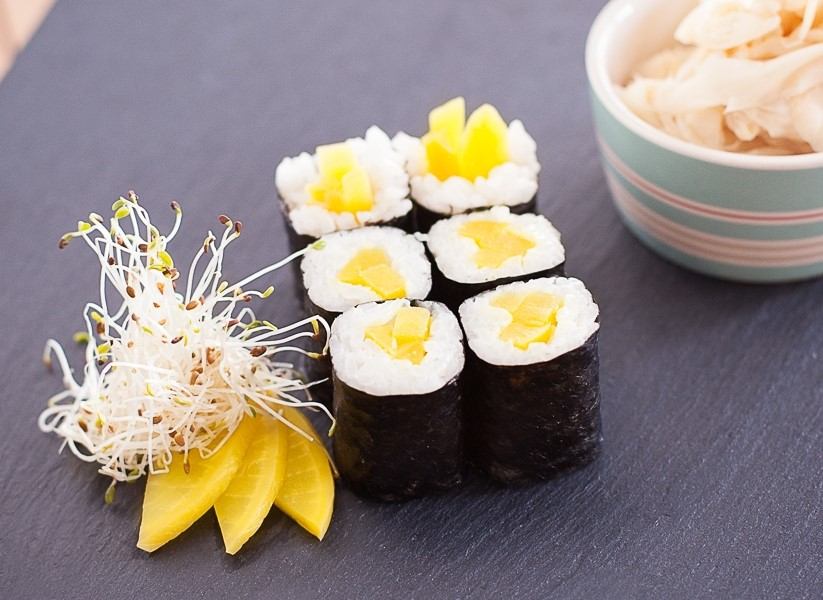
Takuan Hosomaki
*Note: Some sushi contain raw meat
Donburi (rice bowls)
- Gyūdon (beef)
- Katsudon (deep-fried pork cutlets)
- Oyakodon (chicken and egg)
- Tendon (tempura)
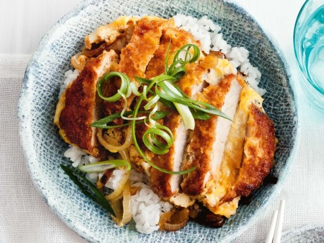
Katsudon
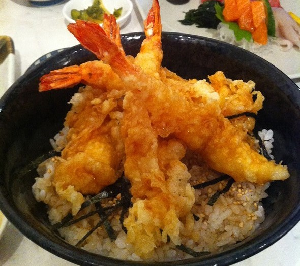
Tendon
Side Dishes
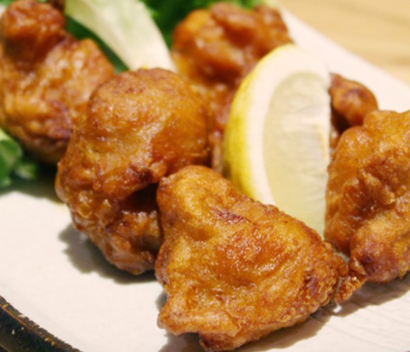
Chicken Karaage
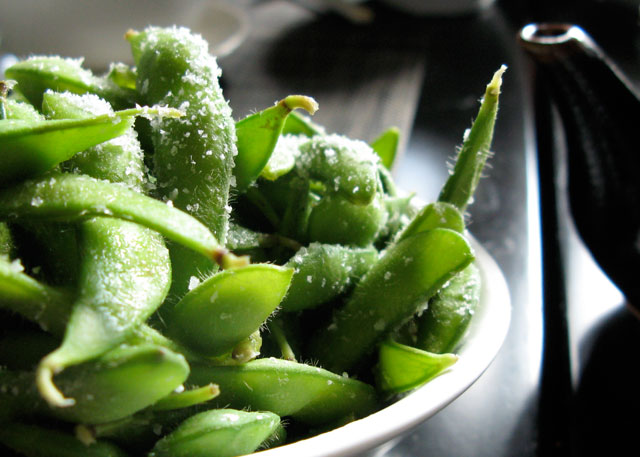
Edamame
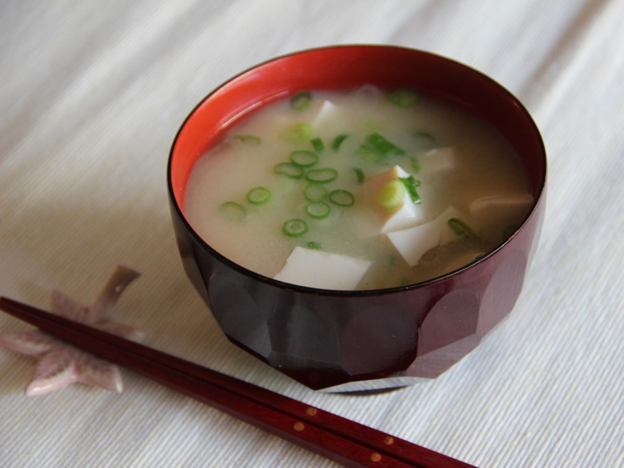
Miso
HTML5
References and Sources